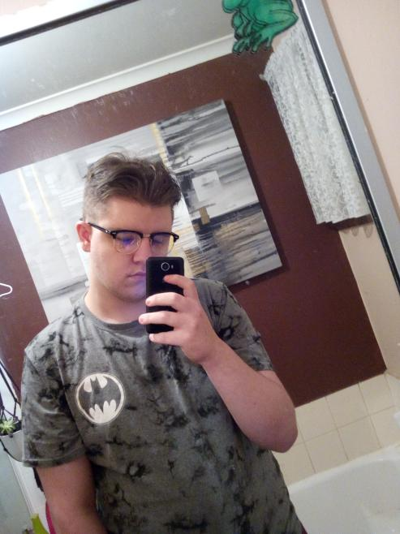

About
Jake Baker was born on the tenty second of april, 2001. He is just the best person ever really,
nothing about him is flawed. I find him quite interesting to talk to.
He is generally kind and I would happily forfeit my first born child to him.
Jake circa 2017
Early Life in dot points
- Jake was born with an IQ of 145
- Jake excelled at kindergarten, he put the correct shapes in their respective holes in record time.
- Jake was affected deeply by a love of white chocolate which strengthened his IQ, raising it to 150
- By age 9, Jake has mastered both integral and differential calculus.
- Although he was good at school, he did not enjoy it and would spend much time fucking around.
- In an interview with Jake's old primary school principal, he stated that he was "supprised that he made it".
The Collapse
Although Giggles was fantastic in just about everything, he lacked friends. He found it difficult to just strike up conversation; however, not to be discouraged by this, he made friends in other ways. For example. in the late 2010's, he made many friends online through a Minecraft server that he would then regret having even set foot upon. His bestes friends were now Shadow, whom he adored, Swift whom he had shared a brief sexual relationship with and Yoghurt, his least favourite by far. Yoghurt did have his perks though, in much the same way that humans get entertainment from animals like at a zoo, Yoghurt provided hours of jester-ish entertainment for Giggles. In the long run they would develop a deep relasionship that consisted mostly of lengthy discord sessions and surprise visits where they exchanged assorted confectionries.
The Rebirth
The day that Giggle's realised that his friends were all that he had was a day of joy. Giggles, although he missed other things in life like money, cameras and sunliught, he relished in every moment that he spent with his friends. They were his new air and water. He was born anew, finally seeing his purpose in life was to just provide for his friends. Whether it be sharing his camera for extended periods, or lending $50 that whould never return or shouting a $200 train ticket, Giggles understood what his purpose was and although other may have found this existence nothing but bleak, Giggles loved every second of it.
